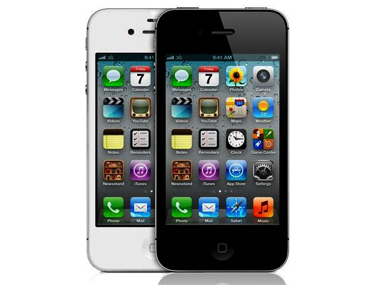

2010: Der Aufstieg des mobilen Internets
Zu Beginn des Jahrzehnts war das Internet längst ein fester Bestandteil des Alltagslebens. Im Jahr 2010 nutzten weltweit rund zwei Milliarden Menschen das Netz. Ein Zeichen dafür, dass das Internet zu einem globalen Kommunikations- und Informationsmedium geworden war. In Deutschland lag die Nutzungsrate laut Statistischem Bundesamt bereits bei etwa 72 % der Bevölkerung. Dennoch erfolgte der Großteil der Zugriffe zu dieser Zeit noch über stationäre Computer.
Zwar war die Infrastruktur für mobiles Internet bereits im Aufbau, doch spielte sie zunächst eine untergeordnete Rolle. Rund 90 % der Weltbevölkerung hatten 2010 Zugang zu Mobilfunknetzen, in Deutschland waren es rund 77 %. Erste Anzeichen eines Wandels wurden sichtbar: Menschen begannen, sich nicht mehr nur am Schreibtisch, sondern auch unterwegs zu vernetzen. Der Grundstein für den Siegeszug des mobilen Internets.
2011-2012: Der Durchbruch der Smartphones
In den Jahren 2011 und 2012 beschleunigte sich diese Entwicklung erheblich. Smartphones verbreiteten sich rasant und ermöglichten erstmals ein komfortables Surfen, Kommunizieren und Einkaufen von unterwegs. Die Geräte vereinten Funktionen, die zuvor auf mehrere Geräte verteilt waren (Telefon, Kamera, Musikplayer und Internetzugang) und machten damit das mobile Internet massentauglich.
Laut Destatis nutzten 2012 bereits 59 % der 16- bis 24-Jährigen in Deutschland regelmäßig das mobile Internet, rund 60 % davon sogar täglich über ihr Smartphone. Parallel dazu nahm die Nutzung sozialer Netzwerke, Video-Streaming-Dienste und mobiler Shopping-Plattformen stark zu. Plattformen wie Facebook, Twitter und YouTube wurden zunehmend mobil genutzt. Ein klarer Hinweis darauf, dass sich die digitale Kommunikation von stationären Geräten auf mobile Endgeräte verlagerte.
Ein weiterer Treiber war die zunehmende Verfügbarkeit schnellerer mobiler Datenverbindungen. Die Einführung der dritten Mobilfunkgeneration (3G/UMTS) machte datenintensive Anwendungen wie Video-Streaming oder Messaging-Dienste erstmals praktikabel. Gleichzeitig fielen die Preise für Datenvolumen, wodurch mobile Nutzung attraktiver wurde.
2013-2014: Das mobile Internet wird zum Standardzugang
In den Jahren 2013 und 2014 veränderte sich die Internetnutzung weltweit grundlegend. Der Anteil der mobilen Internetzugriffe stieg laut StatCounter von rund 17 % auf 28,5 %. Immer mehr Menschen griffen primär über Smartphones und Tablets auf das Netz zu. Weltweit waren 2013 bereits 2,73 Milliarden Menschen online. Ein Anstieg, der maßgeblich auf die Verbreitung mobiler Endgeräte zurückzuführen war. Das mobile Internet entwickelte sich zu einem vollwertigen Zugangskanal für Kommunikation, Information und Unterhaltung.
Die Qualität der Netze stieg stetig, insbesondere durch den Ausbau von 4G/LTE. Diese Technologie bot wesentlich höhere Übertragungsrate und ermöglichte damit neue Nutzungsformen - von hochauflösenden Videostreams bis hin zu cloudbasierten Anwendungen.
Unternehmen begannen, ihre digitalen Angebote für mobile Endgeräte zu optimieren. Webseiten wurden „responsive“, also so gestaltet, dass sie sich automatisch an unterschiedliche Bildschirmgrößen anpassten. Gleichzeitig entstanden spezialisierte Apps, die Nutzenden ein intuitives, auf das Smartphone zugeschnittenes Erlebnis boten. Dieser Trend markierte eine Zäsur in der Geschichte der Internetnutzung: Das Netz war nun nicht mehr an Ort oder Zeit gebunden.
2015: Das mobile Internet wird zur Norm
Bis 2015 hatte sich das mobile Internet endgültig durchgesetzt. Laut dem State of Connectivity Report von Facebook waren weltweit bereits über 3,2 Milliarden Menschen online. In Deutschland lag die Internetnutzungsrate bei 77,6 %. Der mobile Zugang war längst kein Nischenphänomen mehr, sondern zur dominanten Form der Internetnutzung geworden. Besonders in Regionen mit schwacher stationärer Infrastruktur – etwa in Teilen Afrikas, Asiens oder Lateinamerikas – stellte das Smartphone häufig den einzigen Zugang zum Internet dar. Mobile Geräte ermöglichten es Milliarden von Menschen, erstmals an der digitalen Welt teilzuhaben: Sie boten Zugang zu Bildung, Finanzdienstleistungen, Kommunikation und politischer Teilhabe.

In hochentwickelten Märkten wie Deutschland oder den USA veränderte sich gleichzeitig die Art und Weise, wie Menschen Informationen konsumierten. Medienhäuser und Plattformen passten ihre Inhalte zunehmend für mobile Nutzung an: kürzere Artikel, vertikale Videos und Apps mit Push-Benachrichtigungen prägten die neue Informationskultur. Unternehmen wie Google, Apple und Samsung investierten massiv in mobile Betriebssysteme, App-Stores und Cloud-Dienste, um die neue Nachfrage zu bedienen. Auch wirtschaftlich hatte der Wandel enorme Auswirkungen. Mobile Werbung wurde zu einem der wichtigsten Umsatztreiber der Digitalwirtschaft. 2015 stammten laut Smart Insights rund die Hälfte aller Online-Interaktionen von mobilen Endgeräten – ein Trend, der sich bis heute fortgesetzt hat.
Schlüsselfaktoren für den Aufstieg des mobilen Internets
- Ausbau mobiler Netze: Die Einführung von 3G und 4G ermöglichte schnellere und stabilere Datenübertragungen, was eine neue Generation von Online-Diensten möglich machte.
- Verbreitung von Smartphones: Immer günstigere und leistungsfähigere Geräte machten das mobile Internet für breite Bevölkerungsschichten zugänglich.
- Sinkende Datenpreise und technologische Verbesserungen: Durch technische Fortschritte in Prozessorleistung, Akkulaufzeit und Netzabdeckung wurde mobiles Surfen komfortabel und alltagstauglich.
- Substitution des stationären Zugangs: Besonders in Regionen mit schwacher Festnetzabdeckung wurden Smartphones zur primären Verbindung mit dem Internet.
- Globale Reichweite: Das mobile Internet überwand soziale und geografische Grenzen und ermöglichte digitale Teilhabe für Milliarden Menschen weltweit.
- App-Ökosystemen: Apps z.B. für Unterhaltung (YouTube, Instagram, etc.) haben den mobilen Wandel entscheidend mitgeprägt.